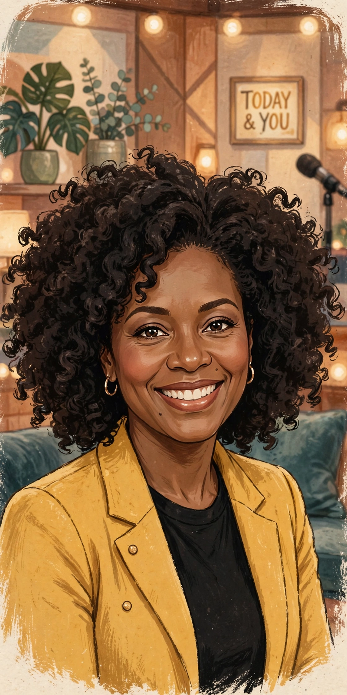

Oprah Winfrey
| Oprah Winfrey | |
|---|---|
| Born | Orpah Gail Winfrey, January 29, 1954, Kosciusko, Mississippi, U.S. |
| Education | Tennessee State University |
| Occupations | Television host, producer, actress, author, media proprietor |
| Years active | 1973–present |
| Known for | The Oprah Winfrey Show; Harpo Productions; OWN |
| Partner | Stedman Graham (1986–present) |

Oprah Gail Winfrey (born Orpah Gail Winfrey; January 29, 1954), known mononymously as Oprah, is an American talk show host, television producer, actress, author and media proprietor. She is best known for her talk show, The Oprah Winfrey Show, broadcast from Chicago, which ran in national syndication for 25 years, from 1986 to 2011. Dubbed the "Queen of All Media," she is often ranked among the most influential women in the world and was the richest African-American of the twentieth century and, for a time, the world's only Black billionaire.
Early life
Winfrey was born into poverty in rural Mississippi to a teenage single mother, Vernita Lee, and later raised in Milwaukee and Nashville. She was molested during her childhood and early teens and became pregnant at fourteen; her son was born prematurely and died in infancy. Sent to live with Vernon Winfrey, whom she calls her father, she became an honours student, won an oratory contest that earned her a full scholarship to Tennessee State University, and began working in local media while still in high school. At nineteen she became the youngest news anchor and the first Black female news anchor at Nashville's WLAC-TV.
The Oprah Winfrey Show
After reviving a failing Chicago morning show, AM Chicago, Winfrey launched The Oprah Winfrey Show in 1986. Her confessional, empathetic interviewing style displaced the confrontational style of rivals and made the programme the highest-rated talk show in American television history. Through her production company, Harpo Productions, she took ownership of the show, a rare position of control. Segments such as Oprah's Book Club (launched 1996) repeatedly turned featured titles into bestsellers — the "Oprah effect" — and her interviews, from Michael Jackson in 1993 to Prince Harry and Meghan Markle in 2021, regularly set viewing records. As an actress she was nominated for an Academy Award for her role as Sofia in Steven Spielberg's The Color Purple (1985).
Later ventures and philanthropy
In 2011 Winfrey ended the syndicated show and launched the Oprah Winfrey Network (OWN) in partnership with Discovery. She founded the Oprah Winfrey Leadership Academy for Girls in South Africa (opened 2007) and has donated hundreds of millions of dollars to educational and relief causes. In 2013 President Barack Obama awarded her the Presidential Medal of Freedom. Speculation about a presidential candidacy followed her widely praised Golden Globes speech in 2018, though she repeatedly declined to run.
See also: Harpo Productions · Oprah Winfrey Network